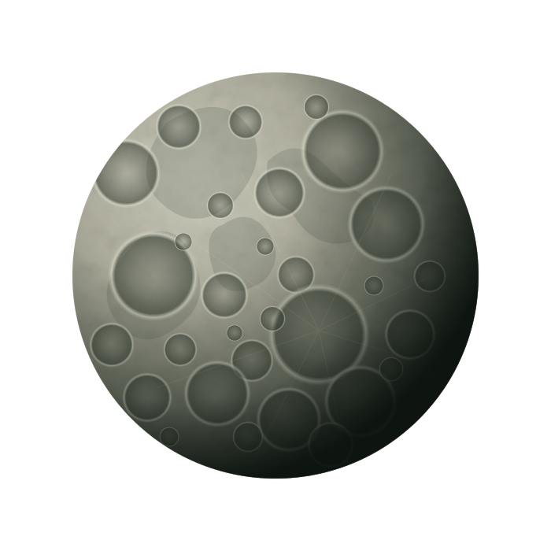

Trouver la lumière
Un Soleil bas sur l’horizon peut être masqué par le relief. Comprendre sa visibilité aide à évaluer les possibilités de production d’énergie solaire.
EXPLORATION · PÔLE SUD LUNAIRE
Sur la Lune, voir le Soleil et garder la Terre en vue change tout. Découvrez les enjeux qui guident le choix d’un site d’alunissage.

01 / L’ENJEU
Une mission ne se prépare pas seulement sur une carte. Au pôle Sud lunaire, le relief et la position des astres font de chaque horizon une donnée essentielle.
Un Soleil bas sur l’horizon peut être masqué par le relief. Comprendre sa visibilité aide à évaluer les possibilités de production d’énergie solaire.
Une liaison directe avec la Terre dépend de sa visibilité depuis le site. Repérer ses passages au-dessus de l’horizon aide à comprendre les fenêtres de communication possibles.
Les objectifs scientifiques et les contraintes techniques se rencontrent dans le choix du lieu et du moment. Une lecture claire des données facilite ce dialogue.
02 / LE PROJET
Des outils existent. L’information essentielle doit être plus facile à explorer.
Le projet porté par NASA.py s’inscrit dans ce défi : proposer une approche intuitive pour comparer des sites et des dates, et visualiser les positions du Soleil et de la Terre par rapport à l’horizon.
Ce site présente cette vision. La liste des fonctions disponibles et les instructions d’installation seront précisées avec la version téléchargeable.
Explorer un site candidat et une date.
Lire les positions du Soleil et de la Terre par rapport à l’horizon.
Mettre en perspective l’éclairement et les possibilités de liaison directe.
Parcours visé par le projet, à confirmer dans la version distribuée.
03 / COMPRENDRE EN UN REGARD
Au-dessus, un astre est géométriquement visible. En dessous, il est masqué. Explorez ce principe avec un schéma simplifié.
Soleil Au-dessus de l’horizon
Terre Au-dessus de l’horizon
Illustration interactive uniquement : aucune éphéméride, date ou donnée de terrain n’est calculée ici. La visibilité seule ne garantit ni une puissance solaire suffisante ni une liaison radio opérationnelle.
UN MÊME HORIZON, PLUSIEURS REGARDS
Une vision commune pour discuter des contraintes scientifiques et techniques d’un site.
Un support pour expliquer le rôle de la géométrie, de la lumière et des communications.
Une porte d’entrée pour comprendre ce qui rend l’exploration du pôle Sud si particulière.
04 / ALLER PLUS LOIN
Le simulateur sera proposé au téléchargement depuis cette page. Sa distribution et son guide d’installation seront ajoutés dans une prochaine étape du projet.
Projet Python · NASA.py
EN PRÉPARATIONAucun fichier n’est encore distribué sur ce site.
QUELQUES REPÈRES
Ce site est informatif. Le schéma interactif explique un principe avec des positions fictives ; il ne remplace pas le simulateur Python ni un outil de planification de mission.
La position apparente des astres et les obstacles à l’horizon influencent la visibilité du Soleil et de la Terre. Comparer le lieu et le moment permet d’examiner différentes conditions d’éclairement et de communication.
Le téléchargement sera intégré ultérieurement. Les prérequis, dépendances et étapes de lancement seront documentés lors de la mise à disposition de la version distribuable.
Non. Ce site présente un projet de simulateur indépendant. Le nom du fichier NASA.py ne constitue pas une affiliation ou une validation par la NASA.